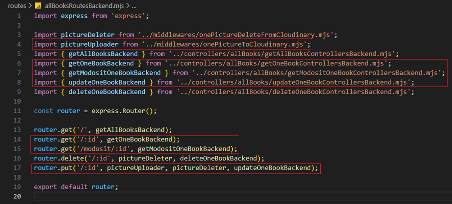

Szűrés beállítása - allBooksRoutesBackend.mjs
Szűrés beállítása - allBooksRoutesBackend.mjs

Ebben a részben szerkesztjük a routes mappában a allBooksRoutesBackend.mjs állományt, amelyben összesítjük a CRUD műveletekhez tartozó logikákat.
-
Szerkesszük a
allBooksRoutesBackend.mjsállományunkat. és
-
import { getAllSzurtBooksBackend } from '../controllers/allBooks/getAllSzurtBooksControllersBackend.mjs';- agetAllSzurtBooksBackendfüggvény nevesített importja. -
router.get('/szures/:id', getAllSzurtBooksBackend);- ahttp GET metódus-hoz tartozó logika hívása agetAllSzurtBooksBackendfüggvény segítségével.
-